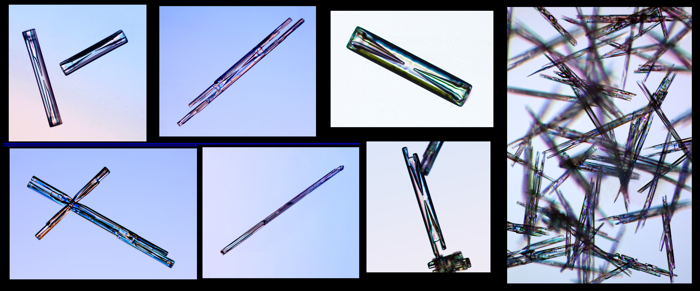

Columnar snow crystals appear when the temperature is around -6 C (21 F), and they can be quite common. They are small and easy to miss, however, as they look like small bits of white hair on your sleeve. Especially long, slender columnar crystals are often called needle crystals. "Hollow columns" have conical hollow regions in both ends, as shown in the drawing and several of the examples.
